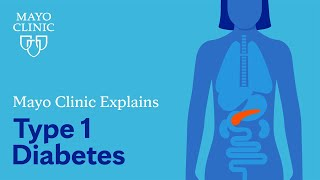
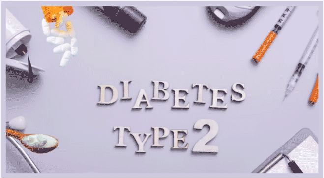
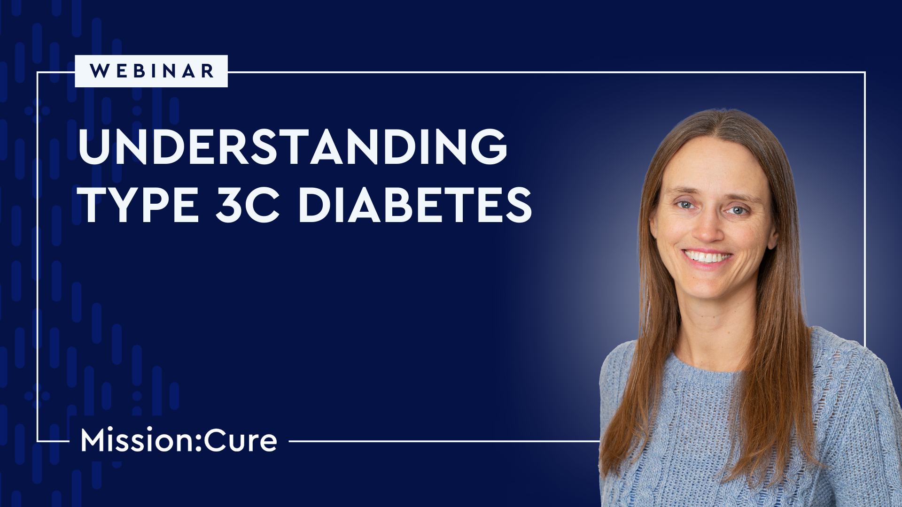

DIABETES
What is Diabetes?
Diabetes is a disease that occurs when your blood sugar, also called glucose, rises and gets too high.
This kind of diabetes occurs when the pancreas does not secrete enough insulin or, in some cases, none at all or when the body is resistant to the effects of insulin.
Both young and old people are vulnerable to the condition.
It is important to note that most types of diabetes are primary or long-lasting conditions, but all kinds of diabetes are treatable with medications and/or changes in the patient’s lifestyle.
Glucose is mainly gotten from carbohydrates in the foods and beverages that one takes More detailed information shall be provided in the subsequent parts.
This is energy ‘s source that your body uses in order to be able to carry out specific tasks.
Glucose is transported by your blood to all the bodily cells to be utilised for energy.
When glucose is in your bloodstream, it requires something–a key – to get to its destination.
Insulin is a hormone explained in the following key.
If the pancreas does not produce enough insulin or if the cells of your body do not use the insulin that is present efficiently, glucose gathers in the bloodstream and results in high blood sugar (hyperglycemia).
Chronic hyperglycaemia, if maintained over the years, leads to complications in the body, for instance, heart diseases, nerve impairment, and eyes complications.
Diabetes has a technical name which is diabetes mellitus. Another disease contains the word diabetes in its name — this one is called diabetes insipidus — but the conditions are different.
They are called diabetes because both of them result in increased desire of sweets and frequent visits to the toilet.
Yet again, the disease can be classified into two main types, however, diabetes insipidus is relatively more rare than diabetes mellitus.
Types of Diabetes
Type-1 Diabetes
Type-2 Diabetes
Type-3c Diabetes
Gestational Diabetes
Type-1 Diabetes
Type 1 diabetes is a chronic condition where the immune system attacks and destroys insulin-producing cells in the pancreas.
As a result, the body can’t produce insulin, a hormone that helps regulate blood sugar levels.
This leads to high blood sugar levels, which need to be managed carefully.
Here are some key points:
- Onset :- It often develops in children, teens, or young adults, but it can occur at any age.
- Symptoms :- Common symptoms include frequent urination, excessive thirst, extreme fatigue, and unexplained weight loss.
- Management :- People with Type 1 diabetes need to take insulin injections or use an insulin pump to regulate their blood sugar levels.
They also need to monitor their blood sugar regularly and manage their diet and exercise.
- Causes :- The exact cause isn’t fully understood, but it involves a combination of genetic and environmental factors.
- No Cure :- Currently, there is no cure for Type 1 diabetes, but with proper management, people can lead healthy lives.
Click below image to watch video

Treatment of Type-1 Diabetes
Type-2 Diabetes
Type 2 diabetes is a chronic condition where the body either becomes resistant to insulin or doesn’t produce enough insulin to maintain normal blood sugar levels.
Unlike Type 1 diabetes, which typically develops in younger individuals, Type 2 diabetes is more common in adults and is often associated with lifestyle factors.
Here are some key points:
- Onset :- It usually develops in adults over 45, but increasing numbers of younger people are being diagnosed due to rising obesity rates.
- Symptoms :- Symptoms may include increased thirst, frequent urination, fatigue, blurred vision, and slow-healing wounds. Sometimes, people might not experience noticeable symptoms.
- Management :- Type 2 diabetes can often be managed with lifestyle changes such as a healthy diet, regular exercise, and weight management.
Medications and insulin may also be needed if lifestyle changes are not enough.
- Causes :- Factors include genetics, obesity, sedentary lifestyle, and poor diet. Insulin resistance develops over time due to these factors.
- Prevention :- It can often be prevented or delayed through maintaining a healthy weight, eating a balanced diet, and being physically active.
Proper management can help control blood sugar levels and reduce the risk of complications. If you need more details, just let me know!
Click below image to watch video

Treatment of Type-2 Diabetes
Type-3c Diabetes
Type 3c diabetes is a type of diabetes that occurs as a result of another condition affecting the pancreas, such as chronic pancreatitis, pancreatic cancer, or cystic fibrosis.
Unlike Type 1 and Type 2 diabetes, which are primary forms of diabetes, Type 3c is secondary and develops because of damage or disease in the pancreas.
Here are some key points:
- Onset :- It typically develops in people who have had pancreatic damage or surgery affecting the pancreas.
- Symptoms :- Symptoms are similar to those of Type 1 and Type 2 diabetes, including increased thirst, frequent urination, fatigue, and blurred vision.
- Management :- Treatment usually involves managing blood sugar levels through a combination of insulin or oral medications, dietary changes, and monitoring.
The underlying condition affecting the pancreas also needs to be treated.
- Causes :- It is caused by pancreatic damage from conditions like chronic pancreatitis, pancreatic cancer, or trauma to the pancreas.
- Diagnosis :- Diagnosis often involves a review of the patient's medical history, including pancreatic diseases or conditions, and blood sugar testing.
Type 3c diabetes requires addressing both the diabetes and the underlying pancreatic condition for effective management.
Click below image to watch video

About Type-3c Diabetes
Gestational Diabetes
Gestational diabetes is a type of diabetes that occurs during pregnancy.
It usually develops around the 24th to 28th week of pregnancy and affects how your cells use sugar (glucose).
The main issues with gestational diabetes are high blood sugar levels, which can lead to complications for both the mother and the baby.
Here are some key points:
- Causes :- It's not entirely clear why some women get gestational diabetes, but factors include being overweight, having a family history of diabetes, or being older than 25.
- Symptoms :- Often, there are no obvious symptoms. It’s usually detected through routine screening tests during pregnancy.
- Risks :- If not managed properly, it can lead to complications such as high birth weight, premature birth, and increased risk of developing type 2 diabetes later in life for both mother and child.
- Management :- Typically involves monitoring blood sugar levels, following a healthy diet, and exercising. Sometimes, insulin or other medications might be needed.
- Post-pregnancy :- For many women, blood sugar levels return to normal after delivery, but they have a higher risk of developing type 2 diabetes in the future.
Managing gestational diabetes effectively helps ensure a healthier pregnancy and reduces risks for both mother and baby.
Click below image to watch video
Treatment of Gestational Diabetes
For Consultation

9014948217
Balaji Naik Sir (Wellness Coach)
Address :-
Plot No 64, Ayuzera Private Limited, Avvai Nagar, Barathi Nagar, East Tambaram, Jaganjeevanram Colony, Chennai - 600073
HOME